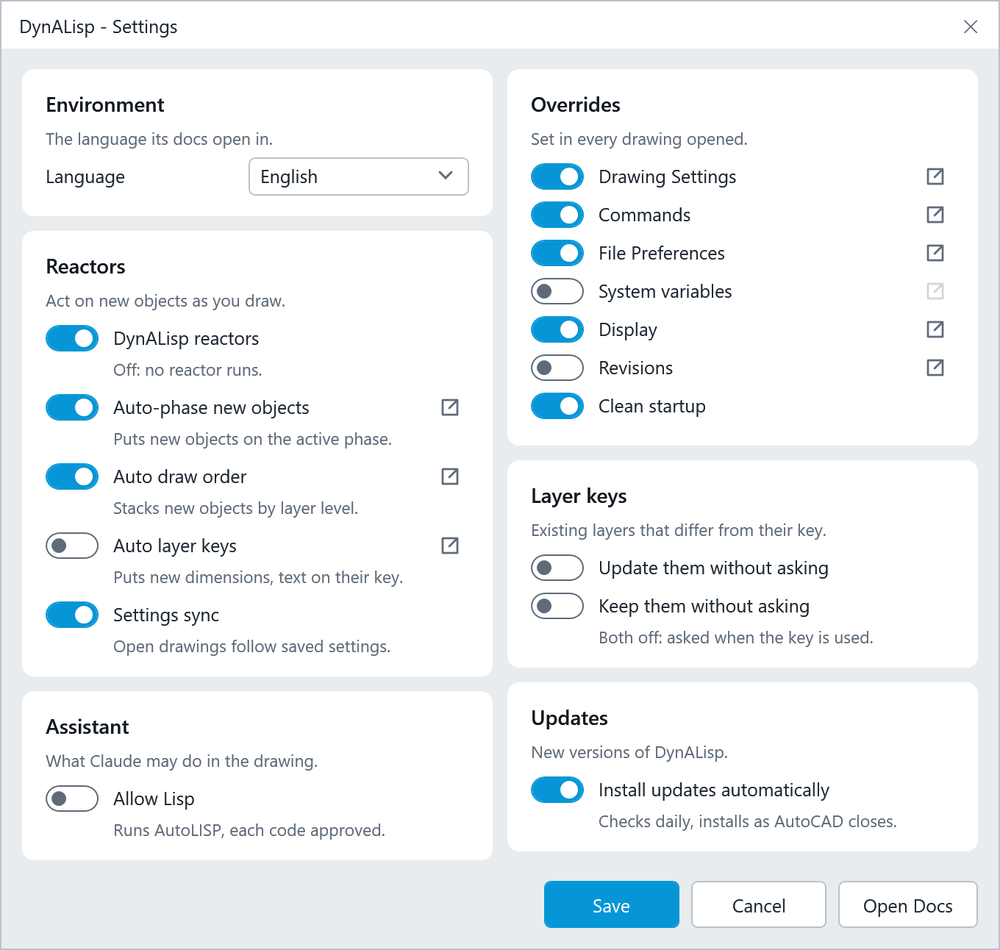

Settings
| Function Syntax | DYL-SETTINGS |
| Requires | AutoCAD 2015 or later for Windows, with the DynALisp windows plugin |
| Licence | GNU General Public License v3 |
Program Description
DYL-SETTINGS opens the DynALisp Settings window: the language of DynALisp, the reactors, which act on the objects as you draw, the overrides, which DynALisp sets in every drawing opened, and the updates of DynALisp. Every on/off setting is off on a new installation; once turned on it is remembered (a Windows user setting, Dynalisp*) for every drawing and session. Save applies and saves the changes, Cancel discards them, Open Docs opens this page.
A setting with a square open button beside it has its own window; the button is greyed out while the setting is off (or when the program it needs is not loaded). Each on/off setting is a switch, its short description under it; the window takes the colors of the light or dark theme of AutoCAD (see Windows).

How To Use
- Type Dyl-Settings (or click Settings on the DynALisp panel of the ribbon).
- Turn on the switches of what DynALisp should do for you; a square open button beside a setting opens its own window.
- Click Save: the settings apply to every drawing, the open ones when you switch to them.
Environment
The language its docs open in.
| Setting | What it does |
|---|---|
| Language | English or French: the language the DynALisp docs open in (the Open Docs buttons, Dyl-Docs, the docs of Dyl-Suite), English for a page not translated yet; the EN | FR switch at the top right of every page changes the language of the page shown. It changes nothing else: the DynALisp tab of the ribbon, the phase names (status bar, Layer Phase) and the descriptions of the Layer Transfer lists are always in the language of the AutoCAD installed. Until it is saved, the language of the AutoCAD installed (English for a language DynALisp does not have yet). It is not the Language of the File Preferences, which sets the content folders and the dictionaries of the drawings. |
Reactors
Act on new objects as you draw. The reactors are in the Reactor folder of each module.
| Setting | What it does |
|---|---|
| DynALisp reactors | The master switch. Off, the Reactor folders are not loaded at all and no reactor runs (the reactor settings below are greyed out). Turned off, the reactors of the open drawings are removed. |
| Auto-phase new objects | Puts the new objects on the layer of the active phase (Layer Phase, PH-AUTO). Its button opens Layer Phase. |
| Auto layer keys | Puts the new dimensions, leaders, text, tables and other common objects made by a command on the layer key of their kind (Object Layer Keys). Its button opens Object Layer Keys. |
| Auto draw order | Stacks the new objects by the level of their layer (Draw Order). Its button opens Draw Order. |
| Settings sync | The other open drawings follow the settings saved here when they are made current (only what changed is applied). Off, a setting applies to the drawing it is changed in and to the drawings opened after. |
Overrides
Set in every drawing opened.
| Setting | What it does |
|---|---|
| Drawing Settings | Every drawing opened is checked against the default units and grid of its kind (imperial or metric); a drawing that differs is set to them. Its button opens the Drawing Settings window, also available while the check is off (for the Shrinkwrap gap step). |
| Commands | Redefines the save and print commands and REGEN (Command Optimizer) so they prepare the drawing first. Its button opens the Output Prep window (Prep Drawing, also DYL-PREPSUITE): the steps run before each command. |
| File Preferences | The DynALisp profile: AutoCAD's paths set from the AEC library classification, drawing units and language. Its button opens the File Preferences window (Set File Preferences). |
| System variables | The preferred values of the active system variable profile, and the protected variables, set in every drawing opened (System Variables). Its button opens Dyl-SysVars. |
| Display | The display settings applied in every drawing opened. Its button opens the Display window. |
| Revisions | Every sheet of a Project Navigator project is updated with the revisions of the project when it opens: its title blocks and revision tags (see Revisions). Its button opens the Revision Title Blocks window. Greyed out when Dyl-Revisions is turned off. |
| Clean startup | Once AutoCAD has started, the lines it printed while starting (Loading AEC..., Customization file loaded successfully, the palettes and startup commands of the workspace...) are removed from the command line. Kept: the Drawing created using... line, the lines of DynALisp and every line that reports an error or a warning. Applies from the next startup. Greyed out in a version older than 2015. See Clean Startup. |
Layer Keys
Existing layers that differ from their key.
| Setting | What it does |
|---|---|
| Update them without asking | A layer of a layer key that exists in the drawing with another color, linetype, lineweight or plot setting than its key is updated to its key, without asking (Layer Keys). |
| Keep them without asking | Such a layer is used as it is, without asking. |
One of the two at most (turning one on turns the other off). Both off, the default: you are asked, once per layer and session. Remember my answer and do not ask again in that question turns one of them on for you; turn it off here to be asked again.
Assistant
What Claude may do in the drawing.
| Setting | What it does |
|---|---|
| Allow Lisp | The Assistant may run AutoLISP code in the drawing, for what its other tools cannot do. Each code is shown whole on a card of the palette, and runs only once you click Allow, every time; one U undoes what it changes. Off, the default: the Assistant never runs AutoLISP. Greyed out without the Assistant (AutoCAD 2016 or later). |
Updates
New versions of DynALisp.
| Setting | What it does |
|---|---|
| Install updates automatically | Once a day, the first drawing opened checks for a new version of DynALisp and starts its setup, which installs it when you close AutoCAD (Updates). Off, Dyl-Info tells you when a new version is out. Greyed out when DynALisp is a git clone: update it with git pull. |
Drawing Settings Window

- Units / Grid – for the imperial drawings and the metric drawings, the unit preset (Set Units) and the grid preset (Standard Grid) every drawing is checked against; (Not checked) leaves it as it is.
- Shrinkwrap gap step – for the imperial (1 by default) and the metric drawings (25 by default), the step by which Shrinkwrap makes its gap tolerance larger when no outline is found, up to 10 times. A number greater than 0, in drawing units. Used even while Drawing Settings is off.
- The values are saved when Settings is saved.
Display Window

- Background – the model space background color set in every drawing: Black, Default (dark blue-grey, RGB 33,40,48) or White, the crosshairs in the opposite color; empty: not changed. More display settings will be added to this window.
- Saved when Settings is saved.